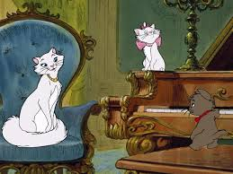
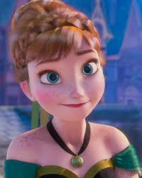

"Todos os seus sonhos podem se tornar realidade se você tiver a coragem de persegui-los".-Walt Disney
Estudando a Disney!
Evolução por décadas
1930-1940
Nesses primeiros anos as animações eram simples, não possuiam tantos detalhes precisos. Apesar disso, na época era como um luxo, principalmente por ser a primeira animação com áudio sincronizado.
É perceptivel os traços simples em Branca de Neve e o uso de cores "apagadas".
Lista dos filmes (Nem todos os filmes estão aqui):
-Branca de neve
-Pinóquio
-Dumbo
-Bambi
-Você já foi a Bahia

1950-1970
Neste período as animações não estavam tão simples, o uso de cores mais vívidas era mais frequente e os cenários mesmo borrados já estavam elaborados.
Lista dos filmes (Nem todos os filmes estão aqui):
-Cinderela
-Alice no país das Maravilhas
-Peter Pan
-A Dama e o Vagabundo
-A Bela Adormecida
-101 Dálmatas
-Mogli
-Aristogatas
-Robin Hood
-Bernardo e Bianca



As animações possuem melhorias perceptíveis, mais cores, mais movimentos, detalhes, paisagens elaboradas e enredo das histórias mais chamativo.
Lista dos filmes (Nem todos os filmes estão aqui):
-O Cão e a Raposa
-A Pequena Sereia
-Oliver e a Sua turma
-Bela e a Fera
-Aladin
-Rei Leão
-Pocahontas
-O Corcunda de Notredame
-Mulan
-Tarzan


Anos 2000
A partir dos anos 2000 os filmes abordam mais temas que desconstroem preconceitos e ideias sociais.
Lista dos filmes (Nem todos os filmes estão aqui):
-A Nova onda do Imperador
-Irmão Urso
-Lilo e Stich
-Princesa e o Sapo


2010 em diante
Durante o século XXI as mudanças são mais perceptíveis. O modo como nós vemos as coisas hoje é refletido em alguns filmes e pode ter obetivos como: aproximação do público, reforçar novas visões sobre o mundo e aceitar o que é diferente, reforçar a diversidade e outras coisas.
Lista dos filmes (Nem todos os filmes estão aqui):
-Enrolados
-Detona Ralph
-Frozen
-Operação Big Hero
-Moana
-Raya
-Encanto


